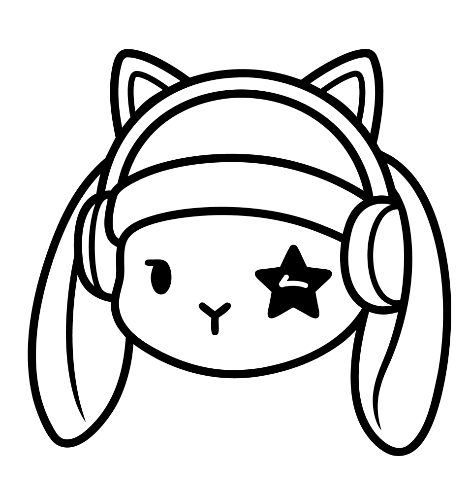

MY SELF
Internal alignment, spec sheet, challenges, and energy flow
Designing with Lived Experience
I am a final-year student in Multimedia and Communication Technologies (MTC) at the University of Aveiro. I have a hybrid profile that bridges the gap between design and front-end development, allowing me to both conceive interactive experiences and program them cleanly.
I bring nearly 23 years of lived experience with neurodivergence, which means I know exactly what it is like to navigate a world that isn't always built for how my brain works. My core purpose is to use my creativity to build useful, human, and accessible digital solutions that help people, especially those who are neurodivergent. My ultimate ambition is to be the support for others that I needed but did not have in the past.
My Personal Interests
I love solving complex problems, studying and understanding human behavior, and looking at challenges through unique, non-linear ways of thinking.
My Professional Interests
I am deeply interested in cognitive accessibility, neurodiversity, inclusion, social impact, and creating interactive digital products and games that make information clear.
My Ikigai Matrix
What I Love
Solving problems, conceptualizing tools, apps, and games, bringing awareness to mental health, and helping people without judgment.
What I'm Good At
Conceptualizing ideas, understanding human behavior, learning fast, and thinking uniquely. I have a broad skill set spanning design, front-end development, and structuring processes, all driven by passion, empathy, and a strong sense of justice.
What I Can Be Paid For
Game design, UX design, user research, front-end development, and project organization or strategy for social causes.
What the World Needs
Tools and structures designed for neurodivergent people, practical solutions to reduce suffering and improve executive functions, and more awareness about neurodiversity and mental health.
My Core Ikigai: I am a Game Designer, UX, and Product Designer specialized in neurodiversity, crafting game mechanics and apps that help with ADHD and mental health.
In five years, I want to be a Game Designer or UX Designer specialized in neurodiversity. I want to work in Portugal or somewhere in Europe where I can work in an English-speaking environment.
To create real impact for people with ADHD and mental health struggles, helping them organize better and feel less stress in their day-to-day interactions.
Practical Requirements:
- Target Setting: Stable tech, education, or social gaming company.
- Work Model: Remote or in-person with fixed working hours.
- Work-Life Balance: Stable salary and a healthy routine where I can disconnect after hours.
- Task Diversity: A diverse range of tasks but structured within a comfortable routine.
- Recognition: Valued primarily for social impact and user wellness contributions.
My Target Careers
- 1. Product Designer (Focusing on UX, interaction, systems, and behavior)
- 2. Gamification Specialist in Digital Therapeutics (DTx)
- 3. Digital Learning Designer
UX Designer with a strict focus on cognitive accessibility, neurodiversity, and interactive digital experiences.
My Values
Tone of Voice
My tone is authentic, empathetic, just, clear, and honest. I communicate with deep respect for differences, avoiding corporate hype.
Audience
I create value for recruiters, employers, project teams, and digital organizations. Most importantly, my ultimate audience consists of neurodivergent people and communities who need and benefit from accessible design.
My Story & Narrative
"My story is about taking my own personal difficulties and the injustices I have witnessed and using them as fuel to create meaningful change. Because I feel the world differently, I connect design and technology to build digital experiences that are truly useful and inclusive. I don't design just to make things look cool; I design to solve real problems and make people feel less alone."
Hard Skills
Tools
Soft Skills
My X-Factor
I have a hybrid profile. I can design an accessible journey and actually program it, bridging the communication and technical execution gap between design and development teams.
My SWOT Matrix
Strengths
My multidisciplinary ability to bridge design and code, my deep empathy, my fast learning speed, and my 23 years of authentic lived experience with neurodivergence.
Weaknesses
I am currently a student needing to finish my portfolio, and I sometimes struggle with the "shame" and fear of putting myself out there publicly or feeling like I am "trying too hard" in front of peers and family. Building a credible brand takes a lot of my energy and focus.
Opportunities
There is a great need for hybrid profiles (design + dev) focused on cognitive accessibility, as the market is saturated with generic UI designers but lacks specialists in neurodiversity for interactive experiences.
Threats
I face competition from highly specialized academic researchers on one side, and traditional "Creative Technologists" in agencies who focus on the aesthetic "wow" factor rather than true cognitive inclusion on the other.
MY BRAND & PROCESS
Brand philosophy and logo process variations
My Logo Concept and Variations
.png)
.png)


My Personal Brand Canvas
My Goals
To build an authentic personal brand and position myself as a Product Designer specialized in cognitive accessibility and neurodiversity, expanding my credibility to attract meaningful tech roles.
Core Competencies
Bridging visual UI/UX design, game development, prototyping, and user research. My technical hybrid background allows me to design clean interfaces and prototype them effectively.
My Identity
Direct, transparent, and honest. I prioritize human inclusion, equity, and empathy over superficial corporate images, keeping my designs aligned with real user needs.
My Brand Identity System
Color Palette Swatches
Typography System
I write standard text, buttons, body copy, and navigation tags using Lexend for a clean, friendly, and highly legible interface structure.
Kind by Design
Used exclusively for core signature, positioning statements, and key branding highlights.
"I design digital experiences that help people navigate, understand, and interact with technology with less friction. I focus on cognitive accessibility and user empathy from the ground up, ensuring my work serves people, not the other way around."
Core Positioning Statement // Kind by DesignMY CAREER & PORTFOLIO
Odyssey careers, project choice rationales, and case study showcase
Bridging Media and Accessibility
I have chosen these projects to demonstrate my range as a hybrid creator who works across different media. By showing a combination of photography, painting, digital gamification, editorial print, augmented reality, and virtual reality, I prove that I can address cognitive accessibility and neurodiversity through multiple creative dimensions, bridging design, physical media, and interactive code.
MY ACTION PLAN
Chronological milestones and targets
Chronological Milestones
- Apply for my Master's program (Mestrado) by July 14.
- Apply for the Portuguese Meeting on Inclusion (Encontro Luso sobre Inclusão).
- Apply for the September Summerschool by the end of July.
- From July 20 forward, evaluate and complete structured design courses.
- Polish copy, layout, and project presentations for my final "bare minimum portfolio."
- Assess my time and decide whether to develop additional portfolio projects.
- Start studying for my driver's theory exam, and pass both theory and practical driving exams by August.
- Assess and decide on my housing options for the duration of my Master's studies.
- Acceptance Scenario: If I am not accepted into the Master's program, I will use this time to focus on my health, engage more with professional networks, and restart my social initiatives.
Complete the first curricular year of the Master's program in Accessibility and Inclusion, and publish 3 to 4 detailed project case studies in my portfolio.
Complete my Master's degree in Accessibility and Inclusion (Mestrado em Acessibilidade e Inclusão) and accumulate practical interaction design experience.
Secure a stable position at a tech, education, or social gaming company with healthy work-life boundaries (fixed working hours), and begin mentoring other neurodivergent designers.